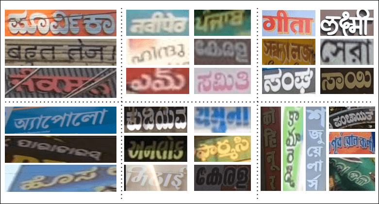

Dataset
Addressing the scarcity of annotated real data, especially for Indian languages, has been a significant challenge. Recently, efforts have led to the emergence of workable datasets.
We curate the largest dataset to solve scene text data scarcity in Indic languages. We sourced our dataset from Indian road scenes, leveraging their textrich elements, including shop boards, advertisement hoardings, traffic signages, banners, pamphlets, and house plates. Samples of images of Indian road scene and word images extracted from it can be seen in Fig2.


Our dataset spans 10 languages - Bengali, Gujarati, Hindi, Kannada, Malayalam, Marathi, Odia, Punjabi, Tamil, and Telugu - offering a comprehensive representation of the diverse linguistic landscape across India. Each language has 25,000 word level images. Among them, 17,500 word level images are allocated for training, 2,500 word level images are for validation, while 5,000 word level images are reserved for testing.
Our dataset comprises regular and irregular samples. Extracted from Indian road scenes, it offers a diverse range of irregular samples, reflecting the varied text instances encountered in real world scenarios.
Training Set
Training ses can be downloaded from these links Bengali Gujarati Hindi Kannada Malayalam Marathi Odia Punjabi Tamil Telugu . Training sets contain word level images (in ‘.png’ format), "train_images.txt" contains name of training images and "train_labels.txt" contains corresponding ground truth transcriptions.
Validation Set
Validation sets can be downloaded from these links Bengali Gujarati Hindi Kannada Malayalam Marathi Odia Punjabi Tamil Telugu . Validation sets contain word level images (in ‘.png’ format), "val_images.txt" contains name of validation images and "val_labels.txt" contains corresponding ground truth transcriptions.
Test Set
Test sets can be downloaded from these links Bengali Gujarati Hindi Kannada Malayalam Marathi Odia Punjabi Tamil Telugu . Test sets contain word level images (in ‘.png’ format), "test_images.txt" contains name of test images.
Output Format Specification
The output should be saved as ‘script name_result.txt’ (e.g., bengali_result.txt) which contains names of test word images and corresponding predictions separated by a tab in each line.
Character List of a Script/Language
Character set can be downloaded from these links
Bengali
Gujarati
Hindi
Kannada
Malayalam
Marathi
Odia
Punjabi
Tamil
Telugu
Special Charlist .
Please note that the special character list provided is not exhaustive and may not include
all characters present in word-images. It's common practice to designate a special character,
not part of the target language script, as a "don't care" character. This helps the model
ignore non-essential characters, which may improve accuracy by reducing the character set
handled by the STR model.
Additional Public Datasets
The participants are allowed to use other publicly available datasets for training their models with proper disclosure of their details while submitting their results. We encourage to use other datasets as well as aim of the competition is to explore the indic space of scene images for pushing the performance and as every data has it’s own characteristics with it, it might help us to discover new insights.Some publicly datasets suggested by us are listed below:
1. IndicSTR12 - A dataset comprising 12 major Indian languages, including Assamese, Bengali, Odia, Marathi, Hindi, Kannada, Urdu, Telugu, Malayalam, Tamil, Gujarati, and Punjabi. The dataset consists of real word images, with a minimum of 1000 images per language, accompanied by their corresponding labels in Unicode.
2. MLT-2019 - dataset contains 20,000 images: 10,000 for training (1,000 per language) and 10,000 for testing. The dataset includes ten languages, representing seven different scripts: Arabic, Bangla, Chinese, Devanagari, English, French, German, Italian, Japanese, and Korean. The number of images per script was equal. Their is another version ICDAR MLT 2017 which contains 9 languages.
The dataset is freely available for academic and research purposes.